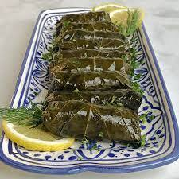

Dolmas

Description
Dolma (Turkish for "stuffed") is a family of stuffed
dishes associated with Ottoman cuisine, typically
made with a filling of rice, minced meat, offal,
seafood, fruit, or any combination of these inside a
vegetable or a leaf wrapping. Wrapped dolma,
specifically, are known as sarma, made by rolling
grape, cabbage, or other leaves around the filling.
Dolma can be served warm or at room temperature and
are common in modern cuisines of regions and nations
that once were part of the Ottoman Empire.
Ingredients
- 1 tablespoon olive oil
- 2 onions, minced
- 1 ½ cups uncooked white rice
- 2 tablespoons tomato paste
- 2 tablespoons dried currants
- 2 tablespoons pine nuts
- 1 tablespoon ground cinnamon
- 1 tablespoon dried mint
- 1 tablespoon dried dill weed
- 1 teaspoon ground allspice
- 1 teaspoon ground cumin
- 1 (8 ounce) jar grape leaves, drained and rinsed
Steps
- Heat oil in a medium saucepan over medium heat.
Saute onions until tender. Stir in rice and hot
water to cover. Cover and simmer until rice is
half cooked, about 10 minutes.
- Remove from heat and stir in tomato paste,
currants, pine nuts, cinnamon, mint leaves, dill
weed, allspice and cumin. Let mixture cool.
- Prepare a large pot by placing an inverted plate
on the bottom; this protects the dolmas from
direct heat when steaming.
- Rinse grape leaves in warm water; drain and cut
off any stems. Place about 1 teaspoon of the
cooled rice mixture in the center of a leaf.
Fold in the sides and then roll into a cigar
shape. Place in prepared pot. Repeat with
remaining ingredients.
- Pour in just enough warm water to reach the
bottom of the first layer of dolmas. Cover and
simmer over low heat for 30 to 45 minutes, or
until rice is totally cooked. Check the water
level often and add more as necessary.